[C/E - Clipping › Simuladão Março/2026 › Estado estacionário]Acerca do modelo de crescimento de Solow, julgue o item a seguir. Item: No modelo de Solow, aumentos na taxa de poupança levam a um nível de produto per capita de estado estacionário mais elevado, mas não afetam a taxa de crescimento de longo prazo, que depende exclusivamente do progresso tecnológico. | ✅ CERTO No modelo de Solow, aumentos na taxa de poupança levam a um nível de produto per capita de estado estacionário mais elevado, mas não afetam a taxa de crescimento de longo prazo, que depende exclusivamente do progresso tecnológico. 🎯 Em poucas palavras: É a síntese de Solow: poupança tem efeito nível (eleva k* e y*); a taxa de crescimento per capita de longo prazo é a do progresso tecnológico exógeno. 📖 Destrinchando o tema:
🧐 Dissecando a redação do item: [literalidade · contraintuitivo] Reproduz o resultado-padrão dos manuais. O “exclusivamente” costuma assustar (modulador absoluto = ERRADO?), mas aqui é exato: em Solow, só o progresso técnico gera crescimento per capita sustentado. A banca inverte o item trocando “exógeno” por “endógeno” ou “nível” por “taxa”. 😈 Para dificultar:
|
[C/E - Nabuco › 2026 › Estado estacionário]A respeito das teorias de crescimento econômico, julgue o item a seguir. Item: O modelo de Solow introduz a substitutibilidade entre capital e trabalho e a hipótese de rendimentos marginais decrescentes para os fatores, o que cria um mecanismo de ajuste automático que leva a economia a um estado estacionário de crescimento balanceado. | ✅ CERTO O modelo de Solow introduz a substitutibilidade entre capital e trabalho e a hipótese de rendimentos marginais decrescentes para os fatores, o que cria um mecanismo de ajuste automático que leva a economia a um estado estacionário de crescimento balanceado. 🎯 Em poucas palavras: É a inovação de Solow sobre Harrod-Domar: com substituição entre fatores e rendimentos decrescentes, a relação capital/trabalho se ajusta sozinha até o estado estacionário, que é estável. 📖 Destrinchando o tema:
🧐 Dissecando a redação do item: [literalidade] Descrição de manual do que diferencia Solow de Harrod-Domar. Todos os termos estão no lugar: substituição, rendimentos marginais (não de escala) decrescentes, ajuste automático, crescimento balanceado. A banca inverteria com “proporções fixas”, “rendimentos crescentes” ou “equilíbrio instável”. 😈 Para dificultar:
|
[C/E - Nabuco › Estado estacionário]Em relação às teorias do crescimento econômico e às teorias do consumo, julgue o item a seguir. Item: A acumulação de capital físico, por si só, é capaz de produzir um aumento permanente da renda per capita no Modelo de Solow, dada a hipótese de rendimentos marginais crescentes sobre o fator capital. | ❌ ERRADO A acumulação de capital físico, por si só, é capaz de produzir um aumento permanente da renda per capita no Modelo de Solow, dada a hipótese de rendimentos marginais crescentes sobre o fator capital. 🎯 Em poucas palavras: O Solow supõe rendimentos marginais decrescentes do capital — e é justamente por isso que acumular capital, sozinho, não sustenta o crescimento da renda per capita: a economia para no estado estacionário. 📖 Destrinchando o tema:
🧐 Dissecando a redação do item: [troca de conceito · nexo indevido] O item troca “decrescentes” por “crescentes” e tira daí uma conclusão coerente com a hipótese falsa. A pista é o “por si só”: no Solow, nada além do progresso técnico sustenta o crescimento per capita. 🔥 A banca alterna “crescentes”, “constantes” e “decrescentes” nesse mesmo esqueleto. 😈 Para dificultar:
✍️ Reescrita correta: A acumulação de capital físico, por si só, não é capaz de produzir um crescimento contínuo da renda per capita no Modelo de Solow, dada a hipótese de rendimentos marginais decrescentes sobre o fator capital. |
[C/E - Nabuco › Estado estacionário]Em relação aos modelos de crescimento, julgue o item a seguir. Item: No modelo de Solow, a função de produção exibe rendimentos marginais crescentes para o capital, o que garante o crescimento contínuo do produto per capita. | ❌ ERRADO No modelo de Solow, a função de produção exibe rendimentos marginais crescentes para o capital, o que garante o crescimento contínuo do produto per capita. 🎯 Em poucas palavras: No Solow o PMgK é decrescente (f(k) côncava). É essa hipótese que leva ao estado estacionário e impede o crescimento per capita contínuo sem progresso técnico. 📖 Destrinchando o tema:
🧐 Dissecando a redação do item: [troca de conceito · nexo indevido] Troca “decrescentes” por “crescentes” e acrescenta um “garante” que só seria consequência da hipótese falsa. Em Solow, toda conclusão de crescimento per capita contínuo sem progresso técnico é ERRADA. 😈 Para dificultar:
✍️ Reescrita correta: No modelo de Solow, a função de produção exibe rendimentos marginais decrescentes para o capital, o que impede o crescimento contínuo do produto per capita sem progresso técnico. |
[C/E - Nabuco › Estado estacionário]Em relação aos modelos de crescimento, julgue o item a seguir. Item: Um aumento na taxa de poupança provoca uma aceleração apenas temporária na taxa de crescimento do produto per capita; no longo prazo, a economia converge para um novo estado estacionário com um nível de produto e capital per capita mais elevado, mas a taxa de crescimento volta a ser determinada pelo progresso tecnológico exógeno. | ✅ CERTO Um aumento na taxa de poupança provoca uma aceleração apenas temporária na taxa de crescimento do produto per capita; no longo prazo, a economia converge para um novo estado estacionário com um nível de produto e capital per capita mais elevado, mas a taxa de crescimento volta a ser determinada pelo progresso tecnológico exógeno. 🎯 Em poucas palavras: É o efeito nível × efeito crescimento do Solow: mais poupança acelera o crescimento só na transição e deixa um nível de k* e y* permanentemente maior; a taxa de longo prazo volta a ser g. 📖 Destrinchando o tema:
📈 No gráfico: 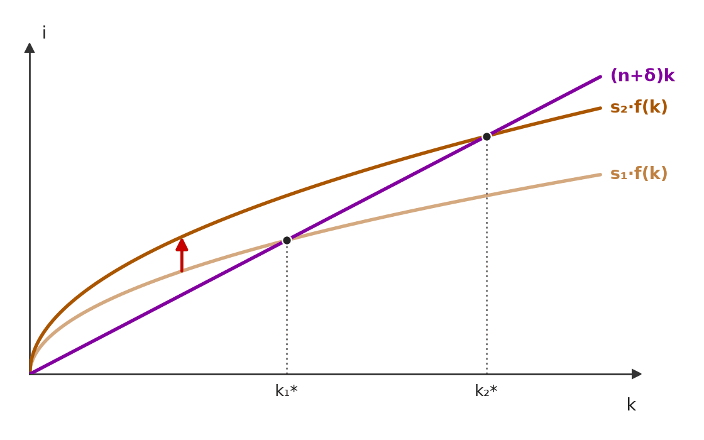 A alta da poupança (s₁ → s₂) desloca a curva de investimento para cima: em k₁* passa a sobrar investimento além da reposição, k cresce durante a transição e para em k₂* — nível maior, mas de novo sem crescimento de k. 🧐 Dissecando a redação do item: [literalidade · detalhe] Reproduz a conclusão-padrão do manual, com três marcadores certos: “apenas temporária”, “nível” e “exógeno”. A versão errada típica troca “temporária” por “permanente” ou diz que a nova taxa de longo prazo é maior. 😈 Para dificultar:
|
[C/E - Nabuco › Estado estacionário]Em relação aos modelos macroeconômicos, julgue o item a seguir. Item: De acordo com o Modelo de Crescimento de Solow, no estado estacionário, a taxa de crescimento do produto per capita é determinada pela taxa de poupança; quanto maior a poupança, maior o crescimento permanente da renda per capita. | ❌ ERRADO De acordo com o Modelo de Crescimento de Solow, no estado estacionário, a taxa de crescimento do produto per capita é determinada pela taxa de poupança; quanto maior a poupança, maior o crescimento permanente da renda per capita. 🎯 Em poucas palavras: A poupança determina o nível de k* e de y*, não a taxa de crescimento de longo prazo, que é g (zero sem progresso técnico). 📖 Destrinchando o tema:
🧐 Dissecando a redação do item: [troca de conceito] Confusão clássica nível × taxa. A primeira metade (“no estado estacionário”) é o gatilho: no estado estacionário nada de s, n ou δ mexe na taxa per capita. 🔥 Um dos itens mais repetidos sobre Solow. 😈 Para dificultar:
✍️ Reescrita correta: De acordo com o Modelo de Crescimento de Solow, no estado estacionário, a taxa de crescimento do produto per capita não é determinada pela taxa de poupança; quanto maior a poupança, maior o nível permanente da renda per capita. |
❌ [C/E - Nidi/Jacqueline Bueno › Fevereiro/2026 › Estado estacionário]A respeito dos modelos de crescimento clássicos e modernos, julgue o item a seguir. Item: No modelo de Solow sem progresso técnico, o aumento da taxa de depreciação do capital leva a economia a uma nova trajetória de crescimento equilibrado, na qual a taxa de retorno do capital é menor do que no equilíbrio original. | ❌ ERRADO No modelo de Solow sem progresso técnico, o aumento da taxa de depreciação do capital leva a economia a uma nova trajetória de crescimento equilibrado, na qual a taxa de retorno do capital é menor do que no equilíbrio original. 🎯 Em poucas palavras: Mais depreciação → k* menor. Com rendimentos marginais decrescentes, capital mais escasso tem produto marginal maior: a taxa de retorno do capital sobe, não cai. 📖 Destrinchando o tema:
📈 No gráfico: 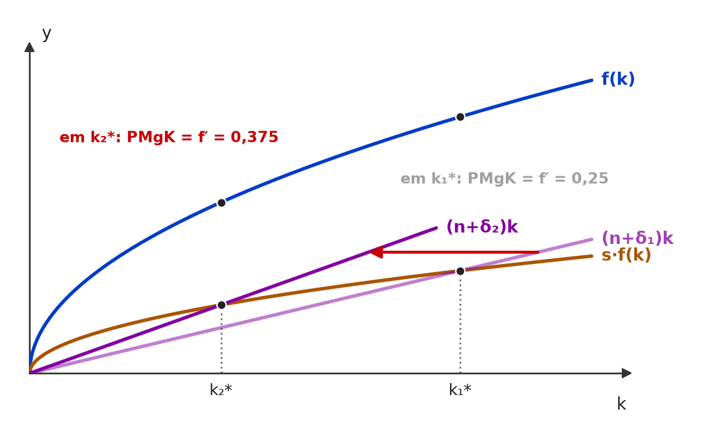 Com δ maior, a reta (n+δ)k fica mais inclinada e o estado estacionário recua de k₁* para k₂*. Como f(k) é côncava, a inclinação de f — o produto marginal do capital, que remunera o capital — é maior em k₂* do que em k₁*. 🧐 Dissecando a redação do item: [inversão] A primeira parte (nova trajetória equilibrada) está certa; o erro é o sentido do efeito sobre o retorno. A intuição apressada “mais desgaste = capital rende menos” confunde depreciação com produtividade. Pista: pergunte sempre o que acontece com k* e aplique a concavidade. 😈 Para dificultar:
✍️ Reescrita correta: No modelo de Solow sem progresso técnico, o aumento da taxa de depreciação do capital leva a economia a uma nova trajetória de crescimento equilibrado, na qual a taxa de retorno do capital é maior do que no equilíbrio original. |
[C/E - Clipping › Simuladão Julho/2025 › Estado estacionário]O crescimento de longo prazo depende da acumulação de fatores e da produtividade total. Com base nas teorias de crescimento, julgue o item a seguir. Item: No modelo de crescimento exógeno de Solow, o aumento da taxa de poupança afeta o crescimento do produto per capita apenas no longo prazo. | ❌ ERRADO No modelo de crescimento exógeno de Solow, o aumento da taxa de poupança afeta o crescimento do produto per capita apenas no longo prazo. 🎯 Em poucas palavras: É o contrário: a alta da poupança acelera o crescimento per capita só na transição para o novo estado estacionário; no longo prazo, muda o nível do produto per capita, e a taxa de crescimento volta a ser a do progresso técnico. 📖 Destrinchando o tema:
📈 No gráfico: 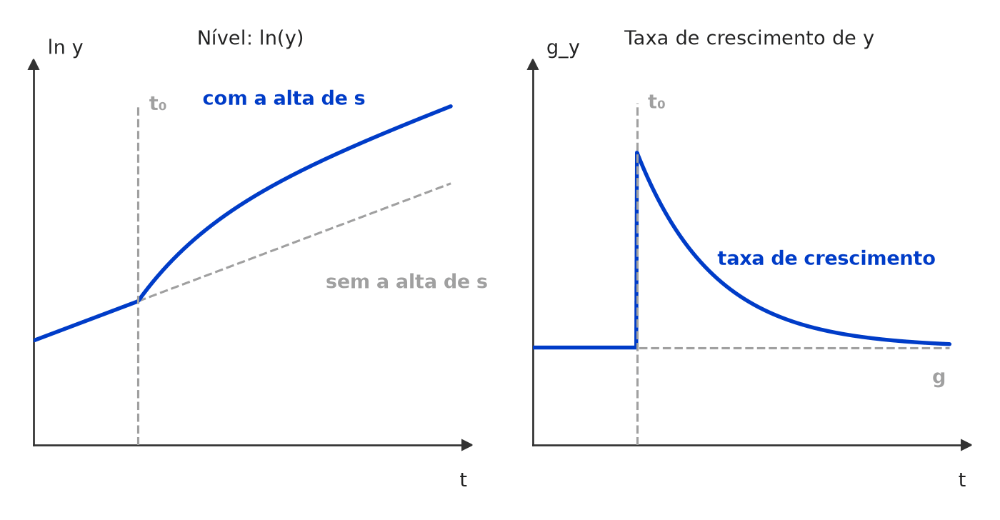 Alta permanente da poupança em t₀: o produto per capita (em log) acelera só durante a transição e depois volta a crescer à taxa g, numa trajetória paralela e mais alta. O efeito permanente é sobre o NÍVEL; sobre a taxa de crescimento, é temporário. 🧐 Dissecando a redação do item: [inversão] O item troca os prazos: atribui ao longo prazo o efeito que só existe na transição. O “apenas” reforça a armadilha, porque o efeito de curto/médio prazo é justamente o único que a poupança tem sobre a taxa de crescimento. Pista: em Solow, “longo prazo” + “taxa de crescimento” remete sempre ao progresso técnico exógeno. 😈 Para dificultar:
✍️ Reescrita correta: No modelo de crescimento exógeno de Solow, o aumento da taxa de poupança afeta o crescimento do produto per capita apenas na transição para o novo estado estacionário (no longo prazo, afeta só o nível). |
❌ [C/E - Clipping › Simulado Ago/2024 › Estado estacionário]Acerca do modelo de crescimento de Solow, julgue o item a seguir. Item: No modelo de Solow, o steady state é caracterizado por poupança per capita igual ao alargamento do capital. | ✅ CERTO No modelo de Solow, o steady state é caracterizado por poupança per capita igual ao alargamento do capital. 🎯 Em poucas palavras: No estado estacionário, Δk = 0: a poupança por trabalhador, s·f(k), cobre exatamente o alargamento do capital (n + δ)k, e não sobra nada para o aprofundamento. 📖 Destrinchando o tema:
🧐 Dissecando a redação do item: [paráfrase fiel] É a definição de estado estacionário com o vocabulário “alargamento”, menos usual que “depreciação efetiva” ou “investimento necessário”. A armadilha é confundir com aprofundamento: quem troca os termos marca ERRADO. 🔥 A dupla aprofundamento × alargamento é cobrada com frequência nos simulados de CACD. 😈 Para dificultar:
|
[C/E - Nabuco › Pré-TPS/2024 › Estado estacionário]Em relação às teorias de crescimento econômico, julgue o item a seguir. Item: No modelo de crescimento econômico de Solow, supõe-se rendimentos marginais constantes do capital. | ❌ ERRADO No modelo de crescimento econômico de Solow, supõe-se rendimentos marginais constantes do capital. 🎯 Em poucas palavras: No Solow, os rendimentos marginais do capital são decrescentes (f(k) côncava). Rendimento marginal constante do capital é a hipótese do modelo AK. 📖 Destrinchando o tema:
🧐 Dissecando a redação do item: [troca de conceito] A banca aproveita a palavra “constantes”, que de fato aparece no Solow — mas nos retornos de escala. Trocar o adjetivo de lugar é o truque inteiro. 🔥 Muito cobrado. 😈 Para dificultar:
✍️ Reescrita correta: No modelo de crescimento econômico de Solow, supõe-se rendimentos marginais decrescentes do capital. |
[C/E - Nabuco › Pré-TPS/2024 › Estado estacionário]Em relação às teorias de crescimento econômico, julgue o item a seguir. Item: Nos parâmetros do modelo de Solow, o aumento da taxa de poupança é irrelevante para o nível de renda per capita de longo prazo de uma sociedade, pois o estado estacionário é afetado somente pelo progresso tecnológico. | ❌ ERRADO Nos parâmetros do modelo de Solow, o aumento da taxa de poupança é irrelevante para o nível de renda per capita de longo prazo de uma sociedade, pois o estado estacionário é afetado somente pelo progresso tecnológico. 🎯 Em poucas palavras: É o contrário: a poupança é irrelevante para a taxa de crescimento de longo prazo, mas eleva o nível de k* e y*. O estado estacionário depende de s, n, δ e da tecnologia. 📖 Destrinchando o tema:
🧐 Dissecando a redação do item: [troca de conceito · restrição indevida] Troca “taxa” por “nível” e fecha com um “somente” que exclui s, n e δ do estado estacionário. A justificativa (“pois…”) soa familiar porque copia a conclusão certa sobre a taxa de crescimento. 😈 Para dificultar:
✍️ Reescrita correta: Nos parâmetros do modelo de Solow, o aumento da taxa de poupança eleva o nível de renda per capita de longo prazo de uma sociedade, pois o estado estacionário é afetado também pela poupança, e não somente pelo progresso tecnológico. |
[C/E - Nidi/Jacqueline Bueno › Simulado Novembro/2024 › Estado estacionário]Considerando os determinantes do crescimento econômico e a experiência recente do Brasil, julgue o item a seguir. Item: De acordo com o modelo de Solow, um aumento na taxa de poupança é capaz de aumentar de forma permanente a taxa de crescimento de um país. Logo, as baixas taxas de poupança registradas no Brasil estão relacionadas com o seu baixo crescimento econômico. | ❌ ERRADO De acordo com o modelo de Solow, um aumento na taxa de poupança é capaz de aumentar de forma permanente a taxa de crescimento de um país. Logo, as baixas taxas de poupança registradas no Brasil estão relacionadas com o seu baixo crescimento econômico. 🎯 Em poucas palavras: No Solow, poupar mais tem efeito nível, não efeito crescimento: eleva para sempre k* e y*, mas a taxa de crescimento só sobe na transição; no longo prazo, volta a ser a do progresso técnico (g). 📖 Destrinchando o tema:
📈 No gráfico: 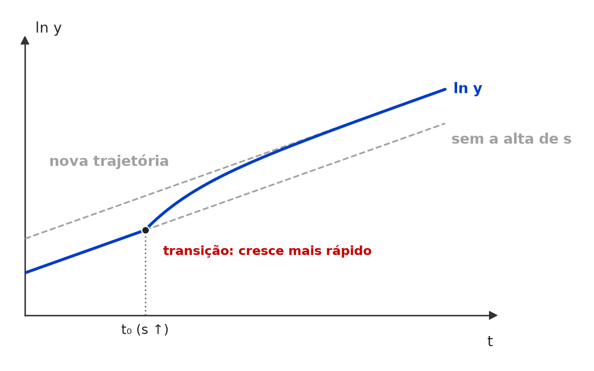 Em t₀ a taxa de poupança sobe. A trajetória de ln y fica mais inclinada só durante a transição e depois volta a correr paralela à antiga, à mesma taxa g: o efeito permanente é de NÍVEL, não de crescimento. 🧐 Dissecando a redação do item: [troca de conceito · nexo indevido] O item troca efeito nível por efeito crescimento e, sobre a premissa falsa, ergue uma conclusão sobre o Brasil com “Logo”. Pista: “de forma permanente” junto de “taxa de crescimento” no Solow é quase sempre ERRADO. 🔥 Tema recorrente em CEBRASPE e ANPEC. 😈 Para dificultar:
✍️ Reescrita correta: De acordo com o modelo de Solow, um aumento na taxa de poupança é capaz de aumentar de forma permanente o nível de renda per capita de um país. Logo, as baixas taxas de poupança registradas no Brasil estão relacionadas com o seu baixo nível de renda per capita. |
[C/E - Clipping › Simulado 07/2023 › Estado estacionário]Acerca do modelo de crescimento de Solow, julgue o item a seguir. Item: Segundo o modelo de Solow, a acumulação de capital ocorre por meio do investimento, que aumenta a quantidade de máquinas, equipamentos e infraestrutura disponíveis na economia. | ✅ CERTO Segundo o modelo de Solow, a acumulação de capital ocorre por meio do investimento, que aumenta a quantidade de máquinas, equipamentos e infraestrutura disponíveis na economia. 🎯 Em poucas palavras: Em Solow, o capital cresce pelo investimento (financiado pela poupança, I = s·Y) e diminui pela depreciação: ΔK = I − δK. 📖 Destrinchando o tema:
🧐 Dissecando a redação do item: [literalidade] Descrição direta do mecanismo de acumulação. Não há modulador nem pegadinha; o risco é desconfiar por excesso (achar que “infraestrutura” ou “máquinas” extrapolam o modelo). A banca inverteria atribuindo a acumulação ao consumo ou dizendo que ela, sozinha, gera crescimento per capita permanente. 😈 Para dificultar:
|
❌ [C/E - Clipping › Simulado 07/2023 › Estado estacionário]Acerca do modelo de crescimento de Solow, julgue o item a seguir. Item: No modelo de Solow, um aumento da taxa de consumo faz a economia crescer até que ela alcance um novo estado estacionário. | ❌ ERRADO No modelo de Solow, um aumento da taxa de consumo faz a economia crescer até que ela alcance um novo estado estacionário. 🎯 Em poucas palavras: Quem faz a economia crescer até um novo estado estacionário é a alta da taxa de poupança. Mais consumo = menos poupança = menos investimento: k* e y* caem. 📖 Destrinchando o tema:
🧐 Dissecando a redação do item: [troca de conceito] Troca de uma só palavra: “consumo” no lugar de “poupança”, num enunciado que, fora isso, é a frase-padrão de Solow. A troca seduz quem raciocina com o multiplicador keynesiano. Pista: em Solow, crescimento vem de acumulação de capital, que vem da poupança. 😈 Para dificultar:
✍️ Reescrita correta: No modelo de Solow, um aumento da taxa de poupança faz a economia crescer até que ela alcance um novo estado estacionário. |
❌ [C/E - Clipping › Simulado 07/2023 › Estado estacionário]Acerca do modelo de crescimento de Solow, julgue o item a seguir. Item: No modelo de Solow, o steady state é caracterizado por poupança per capita igual ao alargamento do capital. | ✅ CERTO No modelo de Solow, o steady state é caracterizado por poupança per capita igual ao alargamento do capital. 🎯 Em poucas palavras: É a própria definição de steady state: s·f(k*) = (n + δ)k*. Toda a poupança vai para o alargamento (repor o desgaste e equipar os novos trabalhadores), e o capital por trabalhador não muda. 📖 Destrinchando o tema:
🧐 Dissecando a redação do item: [paráfrase fiel] Definição de estado estacionário com nome menos comum para o investimento necessário. O erro do candidato costuma vir de confundir “alargamento” com “aprofundamento” ou de achar que o termo vale só para a parcela da população (nk). A mesma assertiva já apareceu em mais de um simulado: 🔥 tema recorrente. 😈 Para dificultar:
|
[C/E - Clipping › Simulado 07/2023 › Estado estacionário]Acerca do modelo de crescimento de Solow, julgue o item a seguir. Item: No modelo de Solow, o PIB per capita é função crescente da razão capital / trabalho. | ✅ CERTO No modelo de Solow, o PIB per capita é função crescente da razão capital / trabalho. 🎯 Em poucas palavras: Com retornos constantes de escala, Y = F(K, L) vira y = f(k), com f′(k) > 0: mais capital por trabalhador, mais produto por trabalhador — a taxas decrescentes (f″ < 0). 📖 Destrinchando o tema:
🧐 Dissecando a redação do item: [literalidade] Propriedade básica da função de produção intensiva. A banca costuma inverter trocando “crescente” por “crescente a taxas crescentes” ou “proporcional”, ou dizendo que, por ser crescente, o acúmulo de capital sustenta crescimento indefinido. 😈 Para dificultar:
|
❌ [C/E - Nidi/Jacqueline Bueno › Simulado 07/2023 › Estado estacionário]Acerca do modelo de crescimento de Solow, julgue o item a seguir. Item: Uma das críticas ao modelo de crescimento de Solow é que ele não é capaz de explicar a relação entre as taxas de poupança e investimento e o crescimento econômico. Neste modelo, a taxa de investimento não afeta a taxa de crescimento equilibrado, restringindo seu efeito ao nível de renda de equilíbrio. | ✅ CERTO Uma das críticas ao modelo de crescimento de Solow é que ele não é capaz de explicar a relação entre as taxas de poupança e investimento e o crescimento econômico. Neste modelo, a taxa de investimento não afeta a taxa de crescimento equilibrado, restringindo seu efeito ao nível de renda de equilíbrio. 🎯 Em poucas palavras: Em Solow, a taxa de investimento (= poupança) tem só efeito nível. Os dados, porém, mostram correlação entre investimento e crescimento de longo prazo — daí a crítica que motivou os modelos de crescimento endógeno. 📖 Destrinchando o tema:
🧐 Dissecando a redação do item: [literalidade · detalhe] A 1ª frase parece exagerada (“não é capaz de explicar a relação”), mas a 2ª a delimita: a relação que falta é com a taxa de crescimento equilibrado. Quem lê só a 1ª e lembra que Solow liga poupança a renda marca ERRADO. A banca inverteria dizendo que o investimento afeta a taxa equilibrada. 😈 Para dificultar:
|
[C/E - Nabuco › Pré-TPS/2023 › Estado estacionário]Sobre teorias do crescimento econômico, julgue o item a seguir. Item: De acordo com o modelo de Solow, se o capital por unidades efetivas de trabalho supera o seu valor de estado estacionário, a poupança do produto médio também supera a taxa de depreciação. | ❌ ERRADO De acordo com o modelo de Solow, se o capital por unidades efetivas de trabalho supera o seu valor de estado estacionário, a poupança do produto médio também supera a taxa de depreciação. 🎯 Em poucas palavras: Acima de k*, a poupança por unidade de capital s·f(k)/k fica abaixo da depreciação efetiva n + g + δ: por isso k encolhe de volta ao estado estacionário. 📖 Destrinchando o tema:
📈 No gráfico: 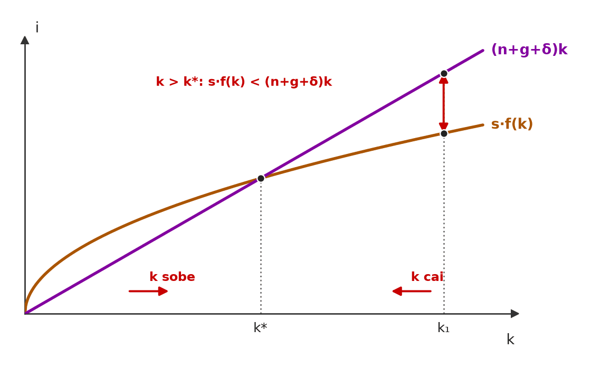 À direita de k*, a reta de reposição (n+g+δ)k passa acima do investimento s·f(k): o que se poupa não cobre a depreciação efetiva e k encolhe até k*. À esquerda, ocorre o inverso e k cresce. 🧐 Dissecando a redação do item: [inversão] O item inverte a desigualdade que garante a convergência: acima de k*, investimento < reposição. O “também” sugere um paralelo (k alto → poupança alta) que a concavidade desmente: com mais capital, o produto médio cai. 😈 Para dificultar:
✍️ Reescrita correta: De acordo com o modelo de Solow, se o capital por unidades efetivas de trabalho supera o seu valor de estado estacionário, a poupança do produto médio fica abaixo da taxa de depreciação efetiva (n + g + δ). |
[C/E - Nabuco › Pré-TPS/2023 › Estado estacionário]Com base no modelo de Solow, julgue o item a seguir. Item: Quanto maior a taxa de poupança de uma economia, maior será o crescimento da renda per capita em estado estacionário. | ❌ ERRADO Quanto maior a taxa de poupança de uma economia, maior será o crescimento da renda per capita em estado estacionário. 🎯 Em poucas palavras: Poupança maior → nível de renda per capita maior no estado estacionário; a taxa de crescimento ali não muda (zero sem progresso técnico, g com ele). 📖 Destrinchando o tema:
🧐 Dissecando a redação do item: [troca de conceito] Uma palavra só (“crescimento” no lugar de “nível”) inverte o gabarito. 🔥 Par clássico de simulados: a mesma frase aparece nas duas versões. 😈 Para dificultar:
✍️ Reescrita correta: Quanto maior a taxa de poupança de uma economia, maior será o nível da renda per capita em estado estacionário. |
[C/E - Prof. Rodrigo Teixeira › Intensivo Pré-TPS/2023 › Estado estacionário]Acerca da relação entre poupança e investimento e dos modelos de crescimento econômico, julgue o item a seguir. Item: No modelo de Solow, países com níveis baixos de poupança como o Brasil tendem a apresentar menores taxas de crescimento do produto no estado estacionário. | ❌ ERRADO No modelo de Solow, países com níveis baixos de poupança como o Brasil tendem a apresentar menores taxas de crescimento do produto no estado estacionário. 🎯 Em poucas palavras: Poupança baixa → nível menor de renda per capita no estado estacionário; a taxa de crescimento ali (per capita g, total n + g) independe de s. 📖 Destrinchando o tema:
🧐 Dissecando a redação do item: [troca de conceito] Confusão nível × taxa, com um apelo ao Brasil para dar verossimilhança. O exemplo brasileiro é verdadeiro (poupança baixa), mas o efeito previsto pelo Solow é sobre o nível. 😈 Para dificultar:
✍️ Reescrita correta: No modelo de Solow, países com níveis baixos de poupança como o Brasil tendem a apresentar menores níveis de produto per capita no estado estacionário, e não menores taxas de crescimento. |
[C/E - Prof. Rodrigo Teixeira › Intensivo Pré-TPS/2023 › Estado estacionário]Com relação aos modelos e teorias de crescimento e desenvolvimento econômico, julgue o item a seguir. Item: Aumentos da taxa de poupança, no modelo de Solow, resultam em um aumento da taxa de crescimento de longo prazo de uma economia, enquanto a redução da taxa de crescimento populacional eleva a taxa de crescimento de longo prazo. | ❌ ERRADO Aumentos da taxa de poupança, no modelo de Solow, resultam em um aumento da taxa de crescimento de longo prazo de uma economia, enquanto a redução da taxa de crescimento populacional eleva a taxa de crescimento de longo prazo. 🎯 Em poucas palavras: Poupança e população mudam o nível de renda per capita de longo prazo, não a taxa de crescimento per capita, que é g. E n menor ainda reduz o crescimento do produto total. 📖 Destrinchando o tema:
🧐 Dissecando a redação do item: [troca de conceito · inversão] Duas orações com o mesmo erro (nível lido como taxa), e a segunda ainda inverte o efeito sobre o agregado. Pista: “taxa de crescimento de longo prazo” no Solow só responde a g. 😈 Para dificultar:
✍️ Reescrita correta: Aumentos da taxa de poupança, no modelo de Solow, não alteram a taxa de crescimento de longo prazo de uma economia, enquanto a redução da taxa de crescimento populacional eleva apenas o nível de renda per capita, sem elevar essa taxa. |
❌ [C/E - Prof. Rodrigo Teixeira › Intensivo Pré-TPS/2023 › Estado estacionário]Com base no modelo de Solow, julgue o item a seguir. Item: No modelo sem progresso técnico, uma redução da taxa de crescimento populacional aumenta a taxa de crescimento do produto per capita no estado estacionário. | ❌ ERRADO No modelo sem progresso técnico, uma redução da taxa de crescimento populacional aumenta a taxa de crescimento do produto per capita no estado estacionário. 🎯 Em poucas palavras: Reduzir n eleva o nível do produto per capita (k* maior), mas a taxa de crescimento per capita no estado estacionário continua zero. 📖 Destrinchando o tema:
🧐 Dissecando a redação do item: [troca de conceito] É a versão espelhada do item “n maior aumenta o crescimento per capita”: a direção do efeito (n menor → melhor) está certa, mas recai sobre o nível, não sobre a taxa. O sinal “certo” é o que engana. 😈 Para dificultar:
✍️ Reescrita correta: No modelo sem progresso técnico, uma redução da taxa de crescimento populacional aumenta o nível do produto per capita no estado estacionário, mas não sua taxa de crescimento, que segue nula. |
[C/E - Prof. Rodrigo Teixeira › Intensivo Pré-TPS/2023 › Estado estacionário]Com base no modelo de Solow, julgue o item a seguir. Item: Quanto maior a taxa de poupança de uma economia, maior será a renda per capita em estado estacionário. | ✅ CERTO Quanto maior a taxa de poupança de uma economia, maior será a renda per capita em estado estacionário. 🎯 Em poucas palavras: s maior → curva de investimento mais alta → k* maior → y* = f(k*) maior. Efeito de nível, permanente. 📖 Destrinchando o tema:
🧐 Dissecando a redação do item: [literalidade · detalhe] O item cobra a palavra exata: “renda per capita” (nível). Quem leu muitos itens “poupança não afeta o longo prazo” tende a marcar ERRADO por reflexo. 😈 Para dificultar:
|
[C/E - Daniel – Economia CACD (Telegram) › Estado estacionário]Julgue o item a seguir, relativo ao modelo de crescimento de Solow. Item: Segundo o modelo neoclássico de Solow, um aumento da taxa de poupança faz a economia crescer até que alcance o novo estado estacionário. Logo, políticas que aumentem a taxa de poupança são eficazes para ampliar o PIB per capita. | ✅ CERTO Segundo o modelo neoclássico de Solow, um aumento da taxa de poupança faz a economia crescer até que alcance o novo estado estacionário. Logo, políticas que aumentem a taxa de poupança são eficazes para ampliar o PIB per capita. 🎯 Em poucas palavras: Alta de s → crescimento transitório até um k* maior → PIB per capita de estado estacionário maior. A política funciona para o nível, não para a taxa de crescimento de longo prazo. 📖 Destrinchando o tema:
🧐 Dissecando a redação do item: [literalidade · modulador relativo] Frase-padrão do modelo seguida de uma conclusão bem delimitada: “ampliar o PIB per capita” (nível). A armadilha seria ler “eficazes” como efeito permanente sobre o crescimento. A banca inverteria com “elevar permanentemente a taxa de crescimento”. 😈 Para dificultar:
|
[C/E - Daniel – Economia CACD (Telegram) › Estado estacionário]Julgue o item a seguir, relativo ao modelo de crescimento de Solow. Item: O modelo de Solow é uma Teoria Neoclássica que descreve como a taxa de crescimento na economia é instável e resultado de uma combinação de três forças principais: a tecnologia, o capital e o trabalho. | ❌ ERRADO O modelo de Solow é uma Teoria Neoclássica que descreve como a taxa de crescimento na economia é instável e resultado de uma combinação de três forças principais: a tecnologia, o capital e o trabalho. 🎯 Em poucas palavras: Solow mostra exatamente o contrário: o crescimento é estável — a economia converge automaticamente para o estado estacionário. Instabilidade (“fio da navalha”) é a conclusão de Harrod-Domar. 📖 Destrinchando o tema:
🧐 Dissecando a redação do item: [troca de conceito] Um adjetivo errado num item que, de resto, descreve bem o modelo. A troca atribui a Solow a marca do modelo que ele veio corrigir. Pista: “neoclássico” em crescimento evoca ajuste automático e estabilidade. 😈 Para dificultar:
✍️ Reescrita correta: O modelo de Solow é uma Teoria Neoclássica que descreve como a taxa de crescimento na economia é estável e resultado de uma combinação de três forças principais: a tecnologia, o capital e o trabalho. |
[C/E - Daniel – Economia CACD (Telegram) › Estado estacionário]Julgue o item a seguir, relativo ao modelo de crescimento de Solow. Item: No modelo de Solow, o aumento da taxa de poupança faz a economia crescer até que alcance o novo estado estacionário. Assim, a acumulação de capital é a poupança descontada da taxa de depreciação e a taxa de poupança é o principal determinante do estoque de capital no estado estacionário. | ✅ CERTO No modelo de Solow, o aumento da taxa de poupança faz a economia crescer até que alcance o novo estado estacionário. Assim, a acumulação de capital é a poupança descontada da taxa de depreciação e a taxa de poupança é o principal determinante do estoque de capital no estado estacionário. 🎯 Em poucas palavras: ΔK = s·Y − δK: a acumulação é a poupança menos a depreciação. E, no estado estacionário, k* = [s·A/(n + δ)]1/(1−α): a poupança é o parâmetro que o modelo destaca como determinante de k*. 📖 Destrinchando o tema:
🧐 Dissecando a redação do item: [literalidade · detalhe] Três afirmações encadeadas, todas do manual. O ponto de hesitação é o “principal determinante”, que soa como juízo de valor: no modelo, s é o deslocador central de k* (ao lado de n e δ). A banca inverteria dizendo que a acumulação é o consumo descontado da depreciação, ou que s é irrelevante para k*. 😈 Para dificultar:
|
[C/E - Nabuco › Estado estacionário]A respeito dos modelos de crescimento e da economia intertemporal, julgue o item a seguir. Item: No modelo de Solow, a taxa de crescimento é sustentável no longo prazo, porque a função de produção agregada funciona sob condições de retornos crescentes de escala. | ❌ ERRADO No modelo de Solow, a taxa de crescimento é sustentável no longo prazo, porque a função de produção agregada funciona sob condições de retornos crescentes de escala. 🎯 Em poucas palavras: O Solow supõe retornos constantes de escala e rendimentos marginais decrescentes; o crescimento per capita só se sustenta com progresso técnico exógeno. 📖 Destrinchando o tema:
🧐 Dissecando a redação do item: [troca de conceito · nexo indevido] Duas falhas encadeadas: atribui ao Solow a hipótese do crescimento endógeno (retornos crescentes) e, a partir dela, conclui um crescimento sustentável que o modelo só obtém com tecnologia exógena. O “porque” é o elo fabricado. 😈 Para dificultar:
✍️ Reescrita correta: No modelo de Solow, a taxa de crescimento per capita só é sustentável no longo prazo com progresso técnico exógeno, pois a função de produção agregada funciona sob condições de retornos constantes de escala, com rendimentos marginais decrescentes. |
[C/E - Nabuco › Estado estacionário]Em relação à teoria macroeconômica, julgue o item a seguir. Item: Em relação ao modelo de crescimento de Solow, se o estoque de capital por trabalhador for inferior ao estoque de capital por trabalhador de estado estacionário, então o capital per capita crescerá ao longo do tempo. | ✅ CERTO Em relação ao modelo de crescimento de Solow, se o estoque de capital por trabalhador for inferior ao estoque de capital por trabalhador de estado estacionário, então o capital per capita crescerá ao longo do tempo. 🎯 Em poucas palavras: Com k < k*, o investimento s·f(k) supera a reposição (n + δ)k: Δk > 0, e k sobe até k*. É a estabilidade do estado estacionário. 📖 Destrinchando o tema:
🧐 Dissecando a redação do item: [literalidade] Descreve a dinâmica de transição do manual, com a direção certa. A versão errada troca “inferior” por “superior” ou diz que k cresceria indefinidamente. 😈 Para dificultar:
|
[C/E - Nabuco › Estado estacionário]Com relação às teorias do crescimento econômico, julgue o item a seguir. Item: De acordo com o modelo de crescimento de Solow, uma explicação para o diferencial de nível de renda per capita, no longo prazo, seria a diferença nas taxas de poupança dos países. | ✅ CERTO De acordo com o modelo de crescimento de Solow, uma explicação para o diferencial de nível de renda per capita, no longo prazo, seria a diferença nas taxas de poupança dos países. 🎯 Em poucas palavras: A poupança determina o nível de k* e y*: países com s maior convergem para estados estacionários mais ricos. O item fala de nível, não de taxa — por isso é CERTO. 📖 Destrinchando o tema:
🧐 Dissecando a redação do item: [literalidade · detalhe] O item parece pegadinha de “poupança não importa no longo prazo”, mas a palavra-chave é nível. 🔥 A banca alterna “nível” (CERTO) e “taxa de crescimento” (ERRADO) nesse mesmo esqueleto. 😈 Para dificultar:
|
[C/E - Nabuco › Estado estacionário]Com relação às teorias do crescimento econômico, julgue o item a seguir. Item: De acordo com o modelo de crescimento de Solow, o crescimento contínuo do volume de investimento por trabalhador contribui para a determinação da taxa de crescimento da renda per capita. | ❌ ERRADO De acordo com o modelo de crescimento de Solow, o crescimento contínuo do volume de investimento por trabalhador contribui para a determinação da taxa de crescimento da renda per capita. 🎯 Em poucas palavras: No Solow, investimento e poupança afetam a taxa de crescimento per capita só na transição. A taxa de longo prazo é dada pelo progresso técnico exógeno. 📖 Destrinchando o tema:
🧐 Dissecando a redação do item: [troca de conceito · nexo indevido] O item empresta ao Solow a lógica do crescimento endógeno (investimento → taxa de crescimento). O “contínuo” é a pista: no Solow, nada movido pela acumulação é contínuo sem tecnologia. 😈 Para dificultar:
✍️ Reescrita correta: De acordo com o modelo de crescimento de Solow, o crescimento contínuo do volume de investimento por trabalhador não determina a taxa de crescimento de longo prazo da renda per capita, dada pelo progresso técnico exógeno. |
[C/E - Nabuco › Estado estacionário]Com relação às teorias do crescimento econômico, julgue o item a seguir. Item: De acordo com o modelo de crescimento de Solow, na ausência de progresso tecnológico, a economia converge para uma taxa de crescimento estável, em que é zero o crescimento da renda per capita. | ✅ CERTO De acordo com o modelo de crescimento de Solow, na ausência de progresso tecnológico, a economia converge para uma taxa de crescimento estável, em que é zero o crescimento da renda per capita. 🎯 Em poucas palavras: Sem progresso técnico, Y e L crescem à mesma taxa n no estado estacionário: Y/L fica constante, e o crescimento per capita é zero. 📖 Destrinchando o tema:
🧐 Dissecando a redação do item: [literalidade · detalhe] Tudo depende da condição “na ausência de progresso tecnológico”. A versão errada diria que o produto agregado não cresce (cresce a n) ou que a renda per capita cresce a n. 😈 Para dificultar:
|
[C/E - Banca não identificada › 2022 › Estado estacionário]Acerca do modelo de crescimento de Solow, julgue o item a seguir. Item: Nos parâmetros do modelo de Solow, o aumento da taxa de poupança é irrelevante para o nível de renda per capita de longo prazo de uma sociedade, pois o estado estacionário é afetado somente pelo nível de produtividade. | ❌ ERRADO Nos parâmetros do modelo de Solow, o aumento da taxa de poupança é irrelevante para o nível de renda per capita de longo prazo de uma sociedade, pois o estado estacionário é afetado somente pelo nível de produtividade. 🎯 Em poucas palavras: A poupança é justamente o que fixa o nível de renda per capita de longo prazo: s maior → k* maior → y* maior. O que ela não muda é a taxa de crescimento de longo prazo. 📖 Destrinchando o tema:
📈 No gráfico: 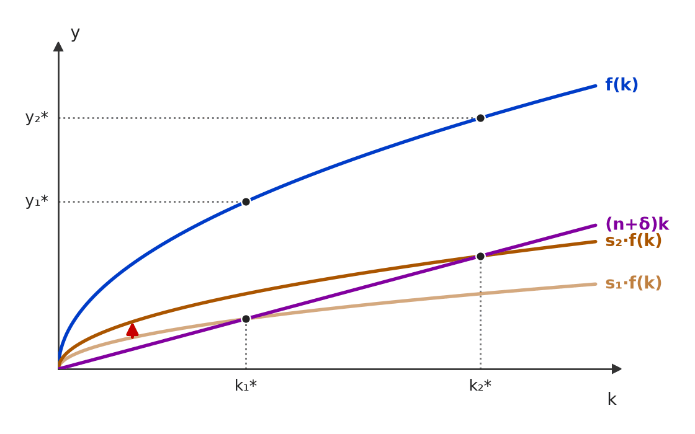 Alta da poupança (s₁ → s₂): a curva de investimento sobe, o novo estado estacionário tem mais capital por trabalhador (k₁* → k₂*) e, pela função de produção, renda per capita de longo prazo maior (y₁* → y₂*). 🧐 Dissecando a redação do item: [troca de conceito · restrição indevida] Duas falhas: troca “taxa de crescimento” (onde a poupança é irrelevante no longo prazo) por “nível de renda” (onde ela é decisiva) e restringe os determinantes do estado estacionário com o “somente”. Pista: “nível” + “poupança” em Solow = efeito positivo. 😈 Para dificultar:
✍️ Reescrita correta: Nos parâmetros do modelo de Solow, o aumento da taxa de poupança eleva o nível de renda per capita de longo prazo de uma sociedade, pois o estado estacionário é afetado pela poupança, pelo crescimento populacional, pela depreciação e pela produtividade. |
[C/E - Banca não identificada › 2019 › Estado estacionário]Acerca do modelo de crescimento de Solow, julgue o item a seguir. Item: Aumentos da taxa de poupança, no modelo de Solow, resultam em uma aceleração apenas temporária do crescimento de uma economia, uma vez que a função de produção apresenta retornos decrescentes de escala no capital. | ✅ CERTO Aumentos da taxa de poupança, no modelo de Solow, resultam em uma aceleração apenas temporária do crescimento de uma economia, uma vez que a função de produção apresenta retornos decrescentes de escala no capital. 🎯 Em poucas palavras: A aceleração é temporária porque o capital tem rendimentos marginais decrescentes: cada unidade adicional rende menos, até que a poupança só cubra o investimento necessário no novo k*. 📖 Destrinchando o tema:
🧐 Dissecando a redação do item: [literalidade · detalhe] A ideia central está certa e a banca manteve CERTO apesar do termo impreciso (“retornos decrescentes de escala no capital” no lugar de “rendimentos marginais decrescentes do capital”). Quem conhece a distinção pode hesitar; o critério é se o mecanismo descrito é o do modelo — e é. 😈 Para dificultar:
|
[C/E - Banca não identificada › 2019 › Estado estacionário]Acerca do modelo de crescimento de Solow, julgue o item a seguir. Item: De acordo com o modelo de Solow, quando a economia se encontra em crescimento balanceado, o estoque de capital e o produto crescem à mesma taxa, o que implica que a relação capital-produto permanece constante. | ✅ CERTO De acordo com o modelo de Solow, quando a economia se encontra em crescimento balanceado, o estoque de capital e o produto crescem à mesma taxa, o que implica que a relação capital-produto permanece constante. 🎯 Em poucas palavras: Na trajetória de crescimento balanceado, K e Y crescem ambos a n + g (ou a n, sem progresso técnico); se numerador e denominador crescem igual, a razão K/Y é constante. 📖 Destrinchando o tema:
🧐 Dissecando a redação do item: [literalidade] É a definição de crescimento balanceado com a consequência algébrica correta. A fonte aponta que o enunciado usa “crescimento balanceado” como sinônimo de estado estacionário — no Solow com tecnologia, os dois se equivalem. A banca inverteria trocando “mesma taxa” por taxas diferentes ou K/Y “crescente”. 😈 Para dificultar:
|
❌ [C/E - Banca não identificada › 2017 › Estado estacionário]Acerca do modelo de crescimento de Solow, julgue o item a seguir. Item: De acordo com o modelo de Solow, um aumento na taxa de poupança é capaz de aumentar de forma permanente a taxa de crescimento de um país. Logo, as baixas taxas de poupança registradas no Brasil estão relacionadas com o seu baixo crescimento econômico. | ❌ ERRADO De acordo com o modelo de Solow, um aumento na taxa de poupança é capaz de aumentar de forma permanente a taxa de crescimento de um país. Logo, as baixas taxas de poupança registradas no Brasil estão relacionadas com o seu baixo crescimento econômico. 🎯 Em poucas palavras: Em Solow, a poupança afeta o nível da renda per capita de estado estacionário, não a taxa de crescimento de longo prazo. A premissa é falsa, e a conclusão sobre o Brasil herda o erro. 📖 Destrinchando o tema:
🧐 Dissecando a redação do item: [troca de conceito · nexo indevido] O item troca “efeito nível” por “efeito crescimento” na premissa e depois tira dela uma conclusão sobre o Brasil que parece razoável no senso comum. O “Logo” só se sustenta se a premissa for verdadeira; quem aceita a primeira frase marca CERTO por embalo. 🔥 Itens com “de forma permanente” + “taxa de crescimento” + “poupança” são ERRADOS em Solow. 😈 Para dificultar:
✍️ Reescrita correta: De acordo com o modelo de Solow, um aumento na taxa de poupança aumenta apenas temporariamente (na transição) a taxa de crescimento de um país. Logo, as baixas taxas de poupança registradas no Brasil estão relacionadas com o seu baixo nível de renda per capita, e não com uma taxa de crescimento permanentemente menor. |
❌ [C/E - IDEG – Prof. Bozan › Pré-TPS/2026 › Regra de ouro]Com base nos modelos de crescimento econômico, julgue o item a seguir. Item: No contexto do modelo de Solow, o ponto de ouro no estado estacionário é onde a economia maximiza seu nível de consumo, sendo este ponto alcançado no ponto estacionário máximo, em que a taxa de investimento per capita se iguala à taxa de depreciação. | ❌ ERRADO No contexto do modelo de Solow, o ponto de ouro no estado estacionário é onde a economia maximiza seu nível de consumo, sendo este ponto alcançado no ponto estacionário máximo, em que a taxa de investimento per capita se iguala à taxa de depreciação. 🎯 Em poucas palavras: Investimento = depreciação (efetiva) vale em todo estado estacionário. A regra de ouro é o estado estacionário em que f′(k) = n + δ — e não o de capital “máximo”. 📖 Destrinchando o tema:
📈 No gráfico: 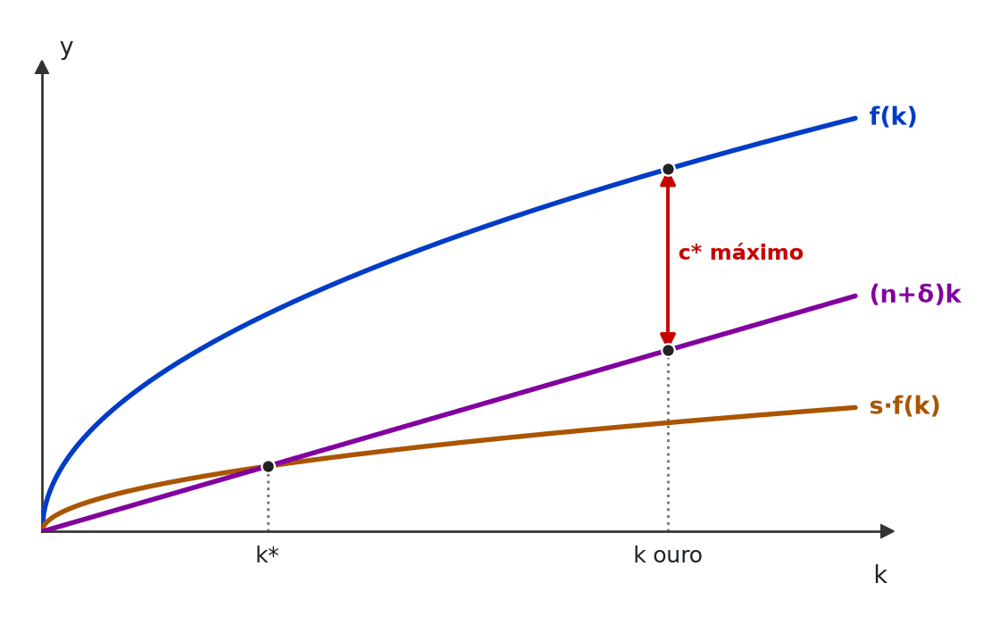 Em todo estado estacionário, s·f(k) = (n+δ)k — é o ponto k*. A regra de ouro escolhe o k em que a inclinação de f(k) iguala a de (n+δ)k: ali a distância vertical entre produção e investimento necessário (o consumo) é máxima. 🧐 Dissecando a redação do item: [meia-verdade · troca de conceito] A primeira oração é a definição correta (maximiza o consumo); o erro foi enxertado na condição, que é a de qualquer estado estacionário, e no “máximo”, que sugere mais capital = melhor. Pista: a condição oferecida não envolve a inclinação de f(k). 😈 Para dificultar:
✍️ Reescrita correta: No contexto do modelo de Solow, o ponto de ouro no estado estacionário é onde a economia maximiza seu nível de consumo, sendo este ponto alcançado no estado estacionário em que o produto marginal do capital se iguala à soma das taxas de depreciação e de crescimento populacional. |
❌ [C/E - Nidi/Jacqueline Bueno › Fevereiro/2026 › Regra de ouro]A respeito dos modelos de crescimento clássicos e modernos, julgue o item a seguir. Item: No modelo de Solow, se o estoque de capital por trabalhador se encontra acima do nível associado à regra de ouro, então o aumento da taxa de crescimento populacional pode aumentar (tudo o mais constante) o nível de consumo per capita, dado que permite diminuir o estoque de capital por trabalhador. | ❌ ERRADO No modelo de Solow, se o estoque de capital por trabalhador se encontra acima do nível associado à regra de ouro, então o aumento da taxa de crescimento populacional pode aumentar (tudo o mais constante) o nível de consumo per capita, dado que permite diminuir o estoque de capital por trabalhador. 🎯 Em poucas palavras: Com s fixo (“tudo o mais constante”), o consumo de estado estacionário é c* = (1−s)·f(k*). Se n sobe, k* cai, f(k*) cai e c* cai — esteja a economia acima ou abaixo da regra de ouro. 📖 Destrinchando o tema:
📈 No gráfico: 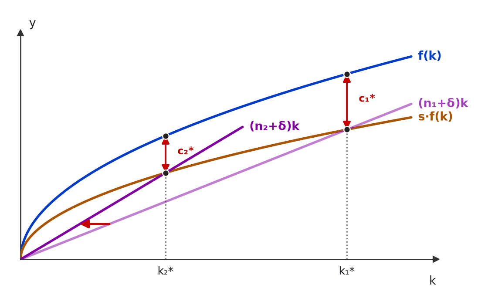 Economia acima da regra de ouro (s alto). Com n maior, k* recua de k₁* para k₂*, mas, com s fixo, o consumo c* = (1−s)·f(k*) — a distância entre f(k) e s·f(k) — encolhe: c₂* < c₁*. 🧐 Dissecando a redação do item: [nexo indevido · meia-verdade] Parte verdadeira (n ↑ reduz k*; acima da regra de ouro, menos capital pode ser bom) + nexo falso (“dado que”) que transforma a queda de k* em ganho de consumo, ignorando o custo de diluir o capital entre mais trabalhadores. Pista: “tudo o mais constante” congela s. 😈 Para dificultar:
✍️ Reescrita correta: No modelo de Solow, se o estoque de capital por trabalhador se encontra acima do nível associado à regra de ouro, então o aumento da taxa de crescimento populacional reduz (tudo o mais constante) o nível de consumo per capita, embora permita diminuir o estoque de capital por trabalhador. |
[C/E - Nabuco › Pré-TPS/2023 › Regra de ouro]Com base no modelo de Solow, julgue o item a seguir. Item: Em um modelo sem progresso técnico, o consumo per capita será maximizado quando a produtividade marginal do capital for igual à soma da taxa de crescimento populacional com a taxa de depreciação. | ✅ CERTO Em um modelo sem progresso técnico, o consumo per capita será maximizado quando a produtividade marginal do capital for igual à soma da taxa de crescimento populacional com a taxa de depreciação. 🎯 Em poucas palavras: É a regra de ouro (Phelps): no estado estacionário, c* = f(k) − (n + δ)k é máximo quando f′(k) = n + δ. 📖 Destrinchando o tema:
🧐 Dissecando a redação do item: [literalidade] Enuncia a condição exata, com a soma correta e o recorte “sem progresso técnico”. Versões erradas trocam a soma por só δ, invertem para “produto maximizado” ou somam g sem estar no modelo. 😈 Para dificultar:
|
[C/E - Prof. Rodrigo Teixeira › Intensivo Pré-TPS/2023 › Regra de ouro]A respeito das relações entre consumo, poupança e crescimento econômico, julgue o item a seguir. Item: No modelo de Solow, é possível que uma taxa de poupança elevada que corresponde a maior produto per capita no equilíbrio de longo prazo, não seja a que traz maior consumo per capita. Assim, a regra de ouro corresponde à taxa de poupança que maximiza o consumo per capita no longo prazo. | ✅ CERTO No modelo de Solow, é possível que uma taxa de poupança elevada que corresponde a maior produto per capita no equilíbrio de longo prazo, não seja a que traz maior consumo per capita. Assim, a regra de ouro corresponde à taxa de poupança que maximiza o consumo per capita no longo prazo. 🎯 Em poucas palavras: Mais poupança sempre eleva y*, mas também a parcela do produto que não é consumida. O consumo de estado estacionário é máximo num ponto intermediário: a regra de ouro, em que PMgK = n + δ. 📖 Destrinchando o tema:
📈 No gráfico: 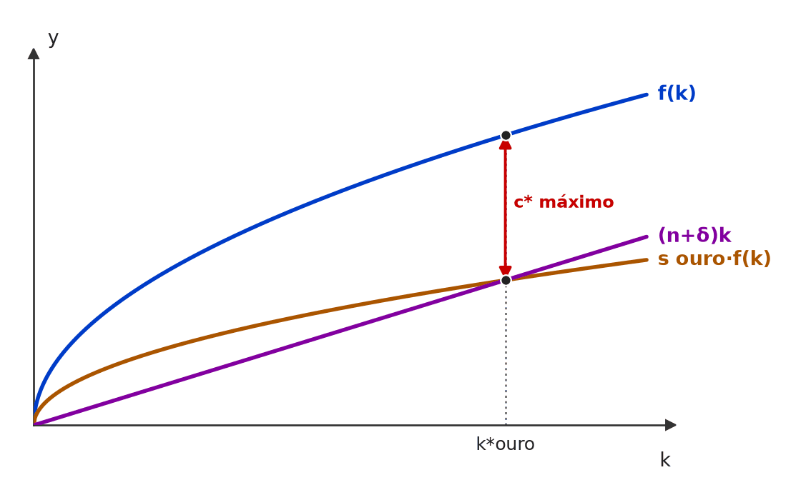 O consumo de estado estacionário é a distância vertical entre f(k) e (n+δ)k. Ela é máxima em k*ouro, onde a inclinação de f(k) (o PMgK) iguala n+δ. A taxa de poupança da regra de ouro é a que leva a economia exatamente a esse k; poupar mais ainda eleva k e y, mas encolhe c. 🧐 Dissecando a redação do item: [literalidade · contraintuitivo] Contraria a intuição de que “mais poupança é sempre melhor”, protegida pelo “é possível”. A segunda frase define a regra de ouro corretamente (maximiza consumo, não produto). 😈 Para dificultar:
|
[C/E - Prof. Rodrigo Teixeira › Regra de ouro]Com relação aos modelos de crescimento econômico de Solow, julgue o item a seguir. Item: Se um país tem um estoque de capital per capita abaixo do nível da regra de ouro, então este país precisa elevar sua taxa de poupança para elevar o consumo per capita. | ✅ CERTO Se um país tem um estoque de capital per capita abaixo do nível da regra de ouro, então este país precisa elevar sua taxa de poupança para elevar o consumo per capita. 🎯 Em poucas palavras: Abaixo de k ouro, falta capital: elevar s leva a um k* maior, mais perto de k ouro, onde o consumo per capita de estado estacionário é máximo. Poupa-se mais (propensão a consumir menor), mas consome-se mais (nível de consumo maior). 📖 Destrinchando o tema:
📈 No gráfico: 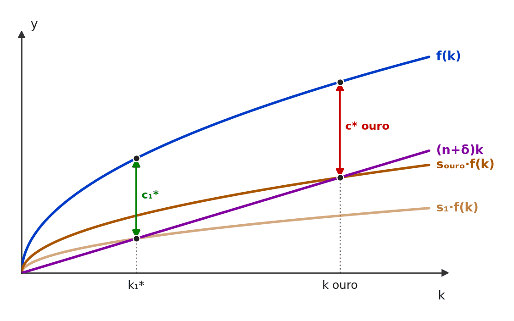 Com s₁ abaixo da poupança de ouro, o estado estacionário k₁* fica à esquerda de k ouro. Elevar a poupança até sₒᵤᵣₒ leva a economia a k ouro, onde a distância entre f(k) e (n+δ)k — o consumo por trabalhador — é máxima: c* ouro > c₁*. 🧐 Dissecando a redação do item: [contraintuitivo] “Poupar mais para consumir mais” parece paradoxal, e quem pensa na propensão a consumir marca ERRADO. O verbo “precisa” é correto para o longo prazo: abaixo de k ouro, não há outro caminho para aumentar c*. A banca inverteria com “acima do nível da regra de ouro”. 😈 Para dificultar:
|
[C/E - Nabuco › Regra de ouro]Em relação à teoria macroeconômica, julgue o item a seguir. Item: Considerando o modelo de Solow, no estado estacionário, o nível de consumo por trabalhador é sempre maximizado. | ❌ ERRADO Considerando o modelo de Solow, no estado estacionário, o nível de consumo por trabalhador é sempre maximizado. 🎯 Em poucas palavras: Há um estado estacionário para cada taxa de poupança, e só um deles maximiza o consumo: o da regra de ouro, em que PMgK = n + δ. 📖 Destrinchando o tema:
🧐 Dissecando a redação do item: [modulador absoluto] O “sempre” transforma uma propriedade de um único estado estacionário (o da regra de ouro) em propriedade de todos. Pista: o estado estacionário depende de s, e o item não fixa s. 😈 Para dificultar:
✍️ Reescrita correta: Considerando o modelo de Solow, no estado estacionário, o nível de consumo por trabalhador só é maximizado quando k* coincide com o capital da regra de ouro (PMgK = n + δ). |
❌ [C/E - Clipping › Simuladão Março/2026 › População, tecnologia e convergência]Acerca do modelo de crescimento de Solow, julgue o item a seguir. Item: O modelo de Solow incorpora progresso tecnológico exógeno, permitindo que o crescimento de longo prazo do produto per capita ocorra mesmo na ausência de aumento do estoque de capital ou da força de trabalho. | ✅ CERTO O modelo de Solow incorpora progresso tecnológico exógeno, permitindo que o crescimento de longo prazo do produto per capita ocorra mesmo na ausência de aumento do estoque de capital ou da força de trabalho. 🎯 Em poucas palavras: Com Y = F(K, A·L) e A crescendo à taxa g, o produto por trabalhador sobe mesmo com K e L parados: a tecnologia multiplica a eficiência de cada trabalhador. É o progresso técnico, e não o capital, que sustenta o crescimento per capita de longo prazo. 📖 Destrinchando o tema:
🧐 Dissecando a redação do item: [contraintuitivo] Verdadeiro, mas choca quem associa crescimento per capita a mais capital por trabalhador. A expressão “mesmo na ausência de” é um contrafactual: isola o papel da tecnologia, não descreve a trajetória de equilíbrio (em que K também cresce). A pista é “progresso tecnológico exógeno”, o único motor de longo prazo do modelo. 😈 Para dificultar:
|
[C/E - IDEG – Prof. Bozan › Pré-TPS/2026 › População, tecnologia e convergência]Com base nos modelos de crescimento econômico, julgue o item a seguir. Item: Considerando o modelo de Solow, a poupança, mesmo sendo uma ferramenta crucial para o financiamento do capital, não é suficiente para sustentar o crescimento econômico no longuíssimo prazo se não for acompanhada de outros elementos como o avanço tecnológico e o controle do crescimento populacional. | ✅ CERTO Considerando o modelo de Solow, a poupança, mesmo sendo uma ferramenta crucial para o financiamento do capital, não é suficiente para sustentar o crescimento econômico no longuíssimo prazo se não for acompanhada de outros elementos como o avanço tecnológico e o controle do crescimento populacional. 🎯 Em poucas palavras: Por causa dos rendimentos marginais decrescentes, a poupança sozinha leva a economia a um estado estacionário em que o crescimento per capita cessa. Só o progresso técnico sustenta crescimento per capita indefinidamente. 📖 Destrinchando o tema:
🧐 Dissecando a redação do item: [literalidade · modulador relativo] O núcleo (“não é suficiente”) é o resultado central de Solow, e o “como” da lista (“outros elementos como…”) deixa a enumeração aberta. A inclusão do controle populacional é frouxa (afeta nível, não taxa), mas não inverte o item. A banca o tornaria ERRADO dizendo que a poupança basta. 😈 Para dificultar:
|
[C/E - IDEG – Prof. Bozan › Pré-TPS/2026 › População, tecnologia e convergência]Com base nos modelos de crescimento econômico, julgue o item a seguir. Item: Os resíduos do modelo de Solow, que incluem elementos como o crescimento populacional e o avanço tecnológico. Estes elementos são determinados dentro do próprio modelo e diretamente influenciam a criação de tecnologia e inovação. | ❌ ERRADO Os resíduos do modelo de Solow, que incluem elementos como o crescimento populacional e o avanço tecnológico. Estes elementos são determinados dentro do próprio modelo e diretamente influenciam a criação de tecnologia e inovação. 🎯 Em poucas palavras: Em Solow, o progresso técnico (e também o crescimento populacional) é exógeno: dado de fora, não explicado pelo modelo. E o resíduo é a parte do crescimento não explicada por capital e trabalho — a população, que é trabalho, não entra nele. 📖 Destrinchando o tema:
🧐 Dissecando a redação do item: [troca de conceito · inversão] O núcleo do erro é exógeno × endógeno (“determinados dentro do próprio modelo”). Há também um deslize conceitual: chamar o crescimento populacional de “resíduo”. A redação truncada (oração sem verbo principal) é da fonte; o julgamento se faz pela 2ª frase. 😈 Para dificultar:
✍️ Reescrita correta: Os resíduos do modelo de Solow, que incluem elementos como ganhos de eficiência e o avanço tecnológico. Estes elementos são exógenos: o modelo não explica a criação de tecnologia e inovação. |
[C/E - IDEG – Prof. Bozan › Pré-TPS/2026 › População, tecnologia e convergência]Com base nos modelos de crescimento econômico, julgue o item a seguir. Item: O crescimento populacional pode aumentar o crescimento econômico absoluto; contudo, conforme o próprio Solow analisa, ele pode levar a uma maior depreciação do parque industrial se não for acompanhado por investimento correspondente em capital, devido ao desgaste das máquinas. | ✅ CERTO O crescimento populacional pode aumentar o crescimento econômico absoluto; contudo, conforme o próprio Solow analisa, ele pode levar a uma maior depreciação do parque industrial se não for acompanhado por investimento correspondente em capital, devido ao desgaste das máquinas. 🎯 Em poucas palavras: A fonte dá CERTO pela ideia de que, em Solow, o crescimento populacional funciona como uma depreciação efetiva do capital por trabalhador. Mas o mecanismo é a diluição do capital entre mais trabalhadores, não o desgaste físico das máquinas. ⚠️ Gabarito contestável: Mantido o CERTO da fonte. A primeira oração está correta (n maior → produto agregado cresce mais depressa). A segunda, porém, descreve um mecanismo que Solow não propõe: no modelo, a depreciação física δ é um parâmetro fixo, que não depende da população; o que n faz é diluir o capital por trabalhador — por isso aparece somado a δ em (n + δ)k e é chamado, por analogia, de “depreciação efetiva”. Atribuir a Solow um “desgaste das máquinas” causado pela população é uma leitura literal indevida da analogia; uma banca rigorosa daria ERRADO. 📖 Destrinchando o tema:
🧐 Dissecando a redação do item: [meia-verdade · troca de conceito] A 1ª oração é correta e a 2ª pega uma analogia didática (n como “depreciação efetiva”) e a converte em mecanismo físico (“desgaste das máquinas”), com o reforço de autoridade “conforme o próprio Solow analisa”. O gabarito oficial aceitou a analogia; leia com cautela itens que dão causa física a um termo de diluição. 😈 Para dificultar:
|
[C/E - Nabuco › 2026 › População, tecnologia e convergência]A respeito das teorias de crescimento econômico, julgue o item a seguir. Item: No modelo de Solow, um aumento na taxa de poupança eleva o nível de produto por trabalhador no estado estacionário, mas não afeta a taxa de crescimento de longo prazo da economia, que é determinada exclusivamente pelo progresso tecnológico endógeno. | ❌ ERRADO No modelo de Solow, um aumento na taxa de poupança eleva o nível de produto por trabalhador no estado estacionário, mas não afeta a taxa de crescimento de longo prazo da economia, que é determinada exclusivamente pelo progresso tecnológico endógeno. 🎯 Em poucas palavras: Tudo certo até a última palavra: em Solow, o progresso tecnológico é exógeno. Tecnologia endógena é a marca dos modelos de Romer e Lucas. 📖 Destrinchando o tema:
🧐 Dissecando a redação do item: [troca de conceito] Clássica pegadinha de última palavra: um enunciado longo e correto, com “endógeno” no lugar de “exógeno” no fim. Quem lê até “progresso tecnológico” e já marca CERTO cai. 🔥 Exógeno × endógeno é a troca mais cobrada em Solow. 😈 Para dificultar:
✍️ Reescrita correta: No modelo de Solow, um aumento na taxa de poupança eleva o nível de produto por trabalhador no estado estacionário, mas não afeta a taxa de crescimento de longo prazo da economia, que é determinada exclusivamente pelo progresso tecnológico exógeno. |
[C/E - Nabuco › 2026 › População, tecnologia e convergência]A respeito das teorias de crescimento econômico, julgue o item a seguir. Item: O modelo de Solow prevê a “convergência condicional”, ou seja, países com taxas de poupança, crescimento populacional e progresso tecnológico semelhantes convergirão para o mesmo nível de renda per capita de estado estacionário, independentemente de seu ponto de partida. | ✅ CERTO O modelo de Solow prevê a “convergência condicional”, ou seja, países com taxas de poupança, crescimento populacional e progresso tecnológico semelhantes convergirão para o mesmo nível de renda per capita de estado estacionário, independentemente de seu ponto de partida. 🎯 Em poucas palavras: Cada país converge para o próprio estado estacionário, definido por s, n, δ e g. Mesmos fundamentos → mesmo destino, não importa de onde se parte: é a convergência condicional. 📖 Destrinchando o tema:
🧐 Dissecando a redação do item: [literalidade] Definição correta, com a condição explícita (“semelhantes”). O “independentemente de seu ponto de partida” assusta, mas está certo: o ponto de partida afeta só a velocidade do caminho. A banca inverteria tirando a condição (“todos os países”) — isso seria a convergência absoluta. 😈 Para dificultar:
|
[C/E - Nabuco › 2026 › População, tecnologia e convergência]Em relação às teorias do crescimento econômico e às teorias do consumo, julgue o item a seguir. Item: Um aumento permanente na taxa de crescimento populacional, no Modelo de Solow, reduz o estoque de capital por trabalhador no estado estacionário, mas pode aumentar a taxa de crescimento do produto agregado. | ✅ CERTO Um aumento permanente na taxa de crescimento populacional, no Modelo de Solow, reduz o estoque de capital por trabalhador no estado estacionário, mas pode aumentar a taxa de crescimento do produto agregado. 🎯 Em poucas palavras: n maior → reta (n + δ)k mais inclinada → k* e y* menores. Mas, no estado estacionário, o produto agregado cresce a n (ou n + g): com n maior, cresce mais depressa. 📖 Destrinchando o tema:
📈 No gráfico: 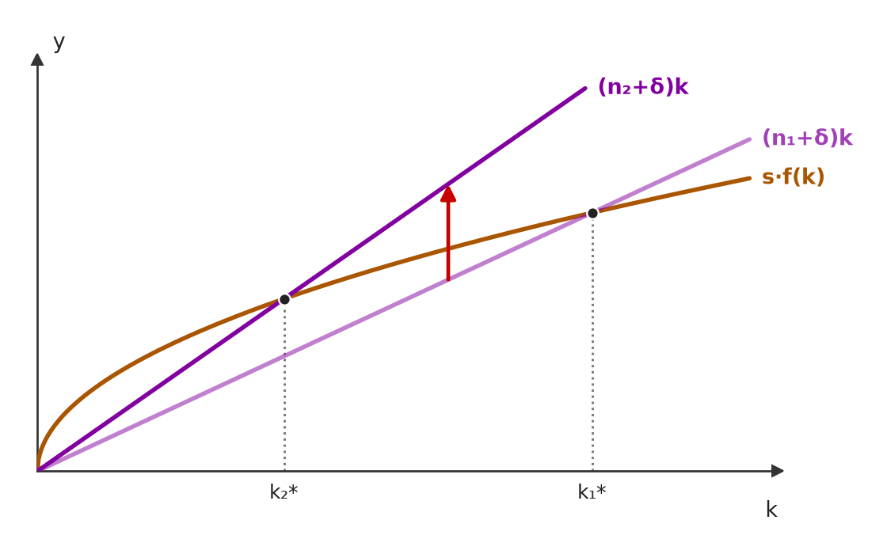 Alta de n: a reta de investimento necessário fica mais inclinada ((n₁+δ)k → (n₂+δ)k) e cruza s·f(k) mais cedo — o capital por trabalhador de estado estacionário cai (k₁* → k₂*). No novo equilíbrio, k fica constante, e o produto agregado cresce à nova taxa n₂, maior. 🧐 Dissecando a redação do item: [contraintuitivo · modulador relativo] Combina dois efeitos de sinais opostos (per capita ↓, agregado ↑), o que leva o candidato a achar que há contradição. A distinção per capita × agregado e o “pode” resolvem. 🔥 A banca costuma trocar “agregado” por “per capita” para tornar o item ERRADO. 😈 Para dificultar:
|
[C/E - Nabuco › População, tecnologia e convergência]Em relação à macroeconomia, julgue o item a seguir. Item: Em um modelo de Solow com progresso técnico, o produto per capita cresce no estado estacionário à taxa (g + n), em que g é a taxa de progresso tecnológico e n é a taxa de crescimento populacional. | ❌ ERRADO Em um modelo de Solow com progresso técnico, o produto per capita cresce no estado estacionário à taxa (g + n), em que g é a taxa de progresso tecnológico e n é a taxa de crescimento populacional. 🎯 Em poucas palavras: (g + n) é a taxa do produto agregado Y. O produto per capita Y/L cresce só a g: o n entra no numerador e sai pelo denominador. 📖 Destrinchando o tema:
🧐 Dissecando a redação do item: [troca de conceito] Atribui ao per capita a taxa do agregado. 🔥 Item recorrente: a banca só troca a variável (per capita × agregado × por trabalhador efetivo) e mantém a taxa, ou o contrário. 😈 Para dificultar:
✍️ Reescrita correta: Em um modelo de Solow com progresso técnico, o produto per capita cresce no estado estacionário à taxa g (é o produto agregado que cresce a g + n), em que g é a taxa de progresso tecnológico e n é a taxa de crescimento populacional. |
[C/E - Nabuco › Pré-TPS/2024 › População, tecnologia e convergência]Em relação às teorias de crescimento econômico, julgue o item a seguir. Item: De acordo com o modelo de crescimento de Solow, quanto maior o crescimento da força de trabalho, tudo o mais constante, menor o PIB por trabalhador. | ✅ CERTO De acordo com o modelo de crescimento de Solow, quanto maior o crescimento da força de trabalho, tudo o mais constante, menor o PIB por trabalhador. 🎯 Em poucas palavras: n maior eleva o investimento de manutenção (n + δ)k: a mesma poupança precisa equipar mais trabalhadores novos, e o estado estacionário recua para k* e y* menores. 📖 Destrinchando o tema:
📈 No gráfico: 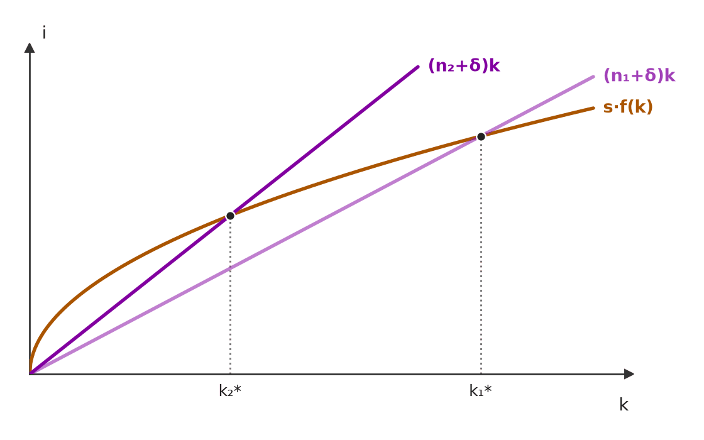 Com n maior, a reta de investimento de manutenção (n+δ)k fica mais inclinada: a mesma poupança precisa equipar mais trabalhadores novos, e o estado estacionário recua de k₁* para k₂* — logo, y* = f(k*) também cai. 🧐 Dissecando a redação do item: [literalidade · modulador relativo] Item de manual protegido pelo “tudo o mais constante”. O risco é ler “menor crescimento do PIB por trabalhador” onde está escrito “menor PIB por trabalhador”: o efeito de n é sobre o nível. 😈 Para dificultar:
|
[C/E - Nabuco › Pré-TPS/2024 › População, tecnologia e convergência]Em relação às teorias de crescimento econômico, julgue o item a seguir. Item: O modelo de Solow incorpora, de forma endógena, o progresso tecnológico, explicando como as empresas tomam decisões que maximizam o retorno de investimentos em geração de conhecimento. | ❌ ERRADO O modelo de Solow incorpora, de forma endógena, o progresso tecnológico, explicando como as empresas tomam decisões que maximizam o retorno de investimentos em geração de conhecimento. 🎯 Em poucas palavras: No Solow o progresso técnico é exógeno: a taxa g cai do céu, sem explicação econômica. Decisões de investir em conhecimento são o objeto do crescimento endógeno (Romer). 📖 Destrinchando o tema:
🧐 Dissecando a redação do item: [troca de conceito · troca de ator] Atribui ao Solow a característica definidora do modelo de Romer. A descrição da segunda metade é precisa — só que de outro modelo. Palavra-gatilho: “endógena” associada a Solow é sempre ERRADO. 😈 Para dificultar:
✍️ Reescrita correta: O modelo de Solow incorpora, de forma exógena, o progresso tecnológico, sem explicar como as empresas tomam decisões que maximizam o retorno de investimentos em geração de conhecimento. |
[C/E - Nidi/Jacqueline Bueno › Simulado Novembro/2024 › População, tecnologia e convergência]Considerando os determinantes do crescimento econômico e a experiência recente do Brasil, julgue o item a seguir. Item: Uma das consequências do modelo de Solow é a sua rejeição de convergência de níveis de renda para todos os países na presença de mudanças tecnológicas. Tal conclusão, contudo, não é explicada pelo modelo que trata a tecnologia como uma variável exógena. | ✅ CERTO Uma das consequências do modelo de Solow é a sua rejeição de convergência de níveis de renda para todos os países na presença de mudanças tecnológicas. Tal conclusão, contudo, não é explicada pelo modelo que trata a tecnologia como uma variável exógena. 🎯 Em poucas palavras: O Solow prevê só convergência condicional: níveis de renda iguais apenas entre países com os mesmos parâmetros e a mesma tecnologia. Por que a tecnologia difere entre países, o modelo não diz — ela é exógena. 📖 Destrinchando o tema:
🧐 Dissecando a redação do item: [paráfrase fiel · contraintuitivo] Redação truncada, mas as duas ideias estão certas: não há convergência para todos (só a condicional) e a causa — diferença tecnológica — é exógena ao modelo. Quem associa “Solow = convergência” tende a marcar ERRADO na primeira oração. 😈 Para dificultar:
|
[C/E - Nabuco › Pré-TPS/2023 › População, tecnologia e convergência]Em relação aos modelos macroeconômicos, julgue o item a seguir. Item: Considerando o modelo de Solow, o aumento da taxa de crescimento populacional aumenta a taxa de crescimento do produto, porém reduz o estoque de capital por trabalhador de longo prazo. | ✅ CERTO Considerando o modelo de Solow, o aumento da taxa de crescimento populacional aumenta a taxa de crescimento do produto, porém reduz o estoque de capital por trabalhador de longo prazo. 🎯 Em poucas palavras: n maior: o produto agregado passa a crescer a n + g (mais rápido), mas o capital por trabalhador de estado estacionário cai, porque mais investimento vai para equipar os novos trabalhadores. 📖 Destrinchando o tema:
🧐 Dissecando a redação do item: [literalidade · detalhe] Parece contraditório (“aumenta… porém reduz”), e é aí que o candidato erra. A chave é “produto” sem “per capita”: o agregado cresce mais rápido. Se o item dissesse “produto per capita”, seria ERRADO. 😈 Para dificultar:
|
[C/E - Nabuco › Pré-TPS/2023 › População, tecnologia e convergência]Sobre teorias do crescimento econômico, julgue o item a seguir. Item: No modelo básico de Solow, uma elevação na taxa de crescimento populacional implica uma elevação da taxa de crescimento per capita no estado estacionário. | ❌ ERRADO No modelo básico de Solow, uma elevação na taxa de crescimento populacional implica uma elevação da taxa de crescimento per capita no estado estacionário. 🎯 Em poucas palavras: n não mexe na taxa per capita de estado estacionário (zero no modelo básico); mexe no nível: k* e y* caem. 📖 Destrinchando o tema:
🧐 Dissecando a redação do item: [troca de conceito · nexo indevido] Transfere para o per capita o efeito que n tem sobre o agregado. Em “estado estacionário” + “per capita”, só g importa. 😈 Para dificultar:
✍️ Reescrita correta: No modelo básico de Solow, uma elevação na taxa de crescimento populacional não altera a taxa de crescimento per capita no estado estacionário, mas reduz o nível de renda per capita. |
[C/E - Nabuco › Pré-TPS/2023 › População, tecnologia e convergência]Com base no modelo de Solow, julgue o item a seguir. Item: Em um modelo com progresso técnico, o produto per capita cresce no estado estacionário à taxa (g + n), em que g é a taxa de progresso tecnológico e n é a taxa de crescimento populacional. | ❌ ERRADO Em um modelo com progresso técnico, o produto per capita cresce no estado estacionário à taxa (g + n), em que g é a taxa de progresso tecnológico e n é a taxa de crescimento populacional. 🎯 Em poucas palavras: No estado estacionário: produto per capita → g; produto total → g + n; força de trabalho → n. 📖 Destrinchando o tema:
🧐 Dissecando a redação do item: [troca de conceito] A taxa (g + n) existe no modelo, mas pertence ao agregado. 🔥 Este mesmo enunciado circula em vários simulados; a variante CERTA troca “per capita” por “total” ou a taxa por g. 😈 Para dificultar:
✍️ Reescrita correta: Em um modelo com progresso técnico, o produto per capita cresce no estado estacionário à taxa g (é o produto total que cresce a g + n), em que g é a taxa de progresso tecnológico e n é a taxa de crescimento populacional. |
[C/E - Nabuco › Pré-TPS/2023 › População, tecnologia e convergência]Com base no modelo de Solow, julgue o item a seguir. Item: Em um modelo sem progresso técnico, um aumento da taxa de crescimento populacional aumenta a taxa de crescimento do produto per capita no estado estacionário. | ❌ ERRADO Em um modelo sem progresso técnico, um aumento da taxa de crescimento populacional aumenta a taxa de crescimento do produto per capita no estado estacionário. 🎯 Em poucas palavras: Sem progresso técnico, Y e L crescem ambos a n: Y/L é constante, e a taxa per capita é zero para qualquer n. O que n maior aumenta é a taxa do produto total. 📖 Destrinchando o tema:
🧐 Dissecando a redação do item: [troca de conceito] Troca o efeito de n sobre o agregado (taxa sobe) pelo efeito sobre o per capita (taxa não muda). A condição “sem progresso técnico” já entrega: taxa per capita de estado estacionário = 0, sempre. 😈 Para dificultar:
✍️ Reescrita correta: Em um modelo sem progresso técnico, um aumento da taxa de crescimento populacional não altera a taxa de crescimento do produto per capita no estado estacionário, que permanece nula. |
[C/E - Nabuco › Pré-TPS/2023 › População, tecnologia e convergência]Com base nas teorias do crescimento econômico, julgue o item a seguir. Item: De acordo com o modelo de crescimento de Solow, uma explicação para o diferencial de nível de renda per capita, no longo prazo seria a diferença nas taxas de poupança dos países. | ✅ CERTO De acordo com o modelo de crescimento de Solow, uma explicação para o diferencial de nível de renda per capita, no longo prazo seria a diferença nas taxas de poupança dos países. 🎯 Em poucas palavras: Controlando os demais fatores, países com poupança maior convergem para estados estacionários com mais capital por trabalhador e renda per capita maior. É diferença de nível — exatamente o que o item diz. 📖 Destrinchando o tema:
🧐 Dissecando a redação do item: [literalidade · detalhe] A palavra “nível” é o que torna o item CERTO; “taxas de crescimento” o tornaria ERRADO. 🔥 A banca repete esta frase em mais de uma prova. 😈 Para dificultar:
|
[C/E - Prof. Rodrigo Teixeira › Intensivo Pré-TPS/2023 › População, tecnologia e convergência]Com relação aos modelos e teorias de crescimento e desenvolvimento econômico, julgue o item a seguir. Item: De acordo com o modelo de Solow, na versão com progresso tecnológico, a economia apresentará crescimento da renda per capita no longo prazo, o que não ocorre na versão sem progresso tecnológico. | ✅ CERTO De acordo com o modelo de Solow, na versão com progresso tecnológico, a economia apresentará crescimento da renda per capita no longo prazo, o que não ocorre na versão sem progresso tecnológico. 🎯 Em poucas palavras: Sem tecnologia, os rendimentos decrescentes levam a renda per capita a parar no estado estacionário. Com progresso técnico à taxa g, ela cresce a g para sempre. 📖 Destrinchando o tema:
🧐 Dissecando a redação do item: [literalidade] Contraste correto entre as duas versões do modelo. A versão errada típica diria que, sem progresso técnico, a renda per capita cresce a n, ou que, com ele, cresce a n + g. 😈 Para dificultar:
|
❌ [C/E - Prof. Rodrigo Teixeira › Intensivo Pré-TPS/2023 › População, tecnologia e convergência]Com base no modelo de Solow, julgue o item a seguir. Item: Na versão com progresso técnico, o produto per capita cresce no estado estacionário à taxa (g + n), em que g é a taxa de progresso tecnológico e n é a taxa de crescimento populacional. | ❌ ERRADO Na versão com progresso técnico, o produto per capita cresce no estado estacionário à taxa (g + n), em que g é a taxa de progresso tecnológico e n é a taxa de crescimento populacional. 🎯 Em poucas palavras: Per capita (Y/L) → g. (g + n) é a taxa do produto agregado; por trabalhador efetivo (Y/AL), a taxa é zero. 📖 Destrinchando o tema:
🧐 Dissecando a redação do item: [troca de conceito] Soma n a uma taxa per capita. É o tipo de item que pega quem decorou “n + g” sem associar a qual variável. 🔥 Enunciado repetido em vários simulados. 😈 Para dificultar:
✍️ Reescrita correta: Na versão com progresso técnico, o produto per capita cresce no estado estacionário à taxa g (é o produto agregado que cresce a g + n), em que g é a taxa de progresso tecnológico e n é a taxa de crescimento populacional. |
❌ [C/E - Prof. Rodrigo Teixeira › Intensivo Pré-TPS/2023 › População, tecnologia e convergência]Com base no modelo de Solow, julgue a afirmativa a seguir como verdadeira ou falsa. Item: Considerando dois países que apresentam mesma função de produção, mesmos valores de taxa de crescimento populacional, depreciação e de poupança, pode-se dizer que o país mais pobre hoje tenderá a crescer mais rapidamente do que o país mais rico, levando à convergência da renda per capita no estado estacionário. | ✅ CERTO Considerando dois países que apresentam mesma função de produção, mesmos valores de taxa de crescimento populacional, depreciação e de poupança, pode-se dizer que o país mais pobre hoje tenderá a crescer mais rapidamente do que o país mais rico, levando à convergência da renda per capita no estado estacionário. 🎯 Em poucas palavras: Com parâmetros iguais, os dois países têm o mesmo estado estacionário; o mais pobre está mais longe dele e, pelos rendimentos marginais decrescentes do capital, cresce mais rápido até alcançá-lo: é a convergência condicional. 📖 Destrinchando o tema:
📈 No gráfico: 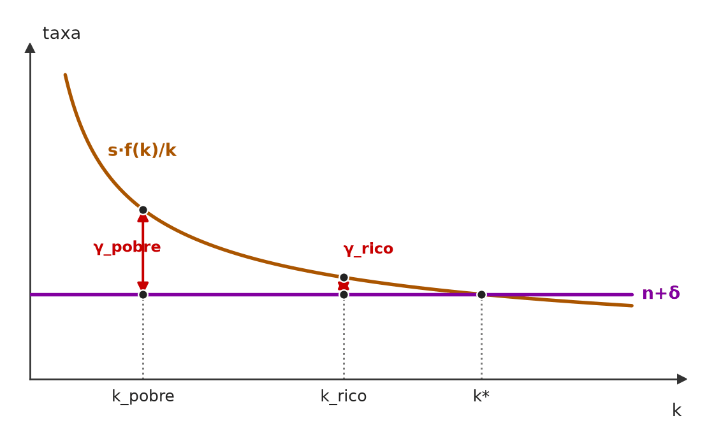 A taxa de crescimento de k é a distância entre s·f(k)/k (decrescente, pelos rendimentos marginais decrescentes) e n+δ. Com os mesmos parâmetros, o país pobre (k menor) está mais longe de k* e cresce mais rápido: γ_pobre > γ_rico. 🧐 Dissecando a redação do item: [literalidade · modulador relativo] É a definição de manual da convergência condicional, protegida por “tenderá”. O risco é o candidato achar que a convergência de Solow “não existe” (a absoluta é rejeitada) e marcar ERRADO sem ler a cláusula dos parâmetros idênticos. 😈 Para dificultar:
|
[C/E - Prof. Rodrigo Teixeira › População, tecnologia e convergência]Com relação aos modelos de crescimento econômico de Solow, julgue o item a seguir. Item: No modelo de Solow sem progresso tecnológico, uma vez que, no longo prazo, a taxa de crescimento do produto per capita é igual à taxa de crescimento populacional, países com maior crescimento da população tendem a ter maior nível de renda per capita. | ❌ ERRADO No modelo de Solow sem progresso tecnológico, uma vez que, no longo prazo, a taxa de crescimento do produto per capita é igual à taxa de crescimento populacional, países com maior crescimento da população tendem a ter maior nível de renda per capita. 🎯 Em poucas palavras: Dois erros: no longo prazo, quem cresce à taxa n é o produto agregado (o per capita fica constante); e n maior reduz o capital e a renda per capita de estado estacionário. 📖 Destrinchando o tema:
🧐 Dissecando a redação do item: [troca de conceito · inversão] A 1ª oração parece certa “por um detalhe”: a taxa n vale para o produto, não para o produto per capita. Sobre essa premissa trocada, o item tira uma conclusão de sinal invertido. Pista: em Solow, “mais população” só pode aparecer com sinal negativo no nível per capita. 😈 Para dificultar:
✍️ Reescrita correta: No modelo de Solow sem progresso tecnológico, embora, no longo prazo, a taxa de crescimento do produto agregado seja igual à taxa de crescimento populacional, países com maior crescimento da população tendem a ter menor nível de renda per capita. |
❌ [C/E - Prof. Rodrigo Teixeira › População, tecnologia e convergência]Com relação aos modelos de crescimento econômico de Solow, julgue o item a seguir. Item: No modelo de Solow com progresso tecnológico, o equilíbrio de longo prazo se dará com uma taxa de crescimento do produto per capita igual à taxa de progresso tecnológico mais a taxa de crescimento populacional, se não houver depreciação. | ❌ ERRADO No modelo de Solow com progresso tecnológico, o equilíbrio de longo prazo se dará com uma taxa de crescimento do produto per capita igual à taxa de progresso tecnológico mais a taxa de crescimento populacional, se não houver depreciação. 🎯 Em poucas palavras: O produto per capita cresce só a g; quem cresce a n + g é o produto agregado. E a depreciação não altera taxas de crescimento de longo prazo, só o nível de k̃*. 📖 Destrinchando o tema:
🧐 Dissecando a redação do item: [troca de conceito · nexo indevido] Erro “por um pequeno detalhe”: a taxa n + g é verdadeira para o produto agregado e foi colada no per capita. A condição final (“se não houver depreciação”) é um distrator que dá aparência de rigor técnico a algo que não depende de δ. 😈 Para dificultar:
✍️ Reescrita correta: No modelo de Solow com progresso tecnológico, o equilíbrio de longo prazo se dará com uma taxa de crescimento do produto per capita igual à taxa de progresso tecnológico, haja ou não depreciação. |
❌ [C/E - Banca não identificada › 2022 › População, tecnologia e convergência]Acerca do modelo de crescimento de Solow, julgue o item a seguir. Item: O resíduo de Solow representa quanto do crescimento econômico é explicado por outros fatores que não sejam o crescimento do capital e do trabalho. Uma interpretação desse termo é que ele corresponde ao progresso tecnológico. | ✅ CERTO O resíduo de Solow representa quanto do crescimento econômico é explicado por outros fatores que não sejam o crescimento do capital e do trabalho. Uma interpretação desse termo é que ele corresponde ao progresso tecnológico. 🎯 Em poucas palavras: O resíduo de Solow é a parte do crescimento do produto que sobra depois de descontada a contribuição de capital e trabalho; costuma ser lido como progresso técnico, ou produtividade total dos fatores (PTF). 📖 Destrinchando o tema:
🧐 Dissecando a redação do item: [literalidade · modulador relativo] Definição de manual, protegida por “uma interpretação”. A banca inverteria afirmando que o resíduo mede apenas o progresso tecnológico, ou que ele é explicado dentro do modelo (é exógeno). 🔥 Resíduo de Solow × endogeneidade da tecnologia é dupla frequente. 😈 Para dificultar:
|
❌ [C/E - Banca não identificada › 2022 › População, tecnologia e convergência]Acerca do modelo de crescimento de Solow, julgue o item a seguir. Item: O modelo de Solow incorpora, de forma endógena, o progresso tecnológico, explicando como as empresas tomam decisões que maximizam o retorno de investimentos em geração de conhecimento. | ❌ ERRADO O modelo de Solow incorpora, de forma endógena, o progresso tecnológico, explicando como as empresas tomam decisões que maximizam o retorno de investimentos em geração de conhecimento. 🎯 Em poucas palavras: Em Solow, o progresso tecnológico é exógeno: entra como um dado (A cresce à taxa g, “cai do céu”), sem nenhuma decisão de empresas sobre P&D. Explicar essa decisão é o programa do crescimento endógeno. 📖 Destrinchando o tema:
🧐 Dissecando a redação do item: [troca de conceito · troca de ator] O item atribui a Solow a tese central do crescimento endógeno. A pista é o vocabulário microfundamentado (“empresas tomam decisões”, “maximizam o retorno”), que não existe no Solow original. 🔥 Exógeno × endógeno é a pegadinha mais frequente em itens sobre Solow. 😈 Para dificultar:
✍️ Reescrita correta: O modelo de Solow incorpora, de forma exógena, o progresso tecnológico, sem explicar como as empresas tomam decisões que maximizam o retorno de investimentos em geração de conhecimento. |
❌ [C/E - Banca não identificada › 2017 › População, tecnologia e convergência]Acerca do modelo de crescimento de Solow, julgue o item a seguir. Item: Uma das consequências do modelo de Solow é a sua rejeição de convergência de níveis de renda para todos os países. Tal conclusão é uma implicação da hipótese de retornos marginais crescentes do modelo. | ❌ ERRADO Uma das consequências do modelo de Solow é a sua rejeição de convergência de níveis de renda para todos os países. Tal conclusão é uma implicação da hipótese de retornos marginais crescentes do modelo. 🎯 Em poucas palavras: Solow supõe rendimentos marginais decrescentes do capital, e é isso que gera a previsão de convergência: economias com pouco capital crescem mais depressa. Com retornos crescentes, haveria divergência. 📖 Destrinchando o tema:
🧐 Dissecando a redação do item: [inversão · troca de conceito] O item inverte a conclusão (rejeição × previsão de convergência) e a hipótese que a sustenta (crescentes × decrescentes). Um detalhe fino: como a convergência de Solow é só condicional, ele de fato não prevê que todos os países cheguem ao mesmo nível; mas o erro da 2ª frase basta para o ERRADO, porque retornos crescentes não fazem parte do modelo. 😈 Para dificultar:
✍️ Reescrita correta: Uma das consequências do modelo de Solow é a sua previsão de convergência de níveis de renda entre países com os mesmos fundamentos (convergência condicional). Tal conclusão é uma implicação da hipótese de retornos marginais decrescentes do modelo. |